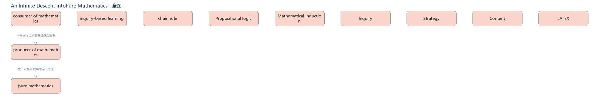
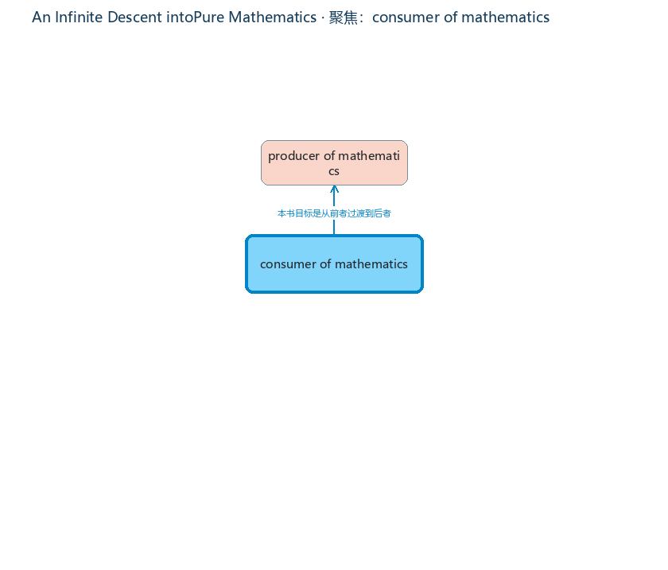

Personal Learning OS —— 把任何知识资产转化为专家能力。本报告基于源码通读、运行验证与测试执行。
ExpertAnything 不是 AI 阅读器，也不是 RAG 聊天机器人。它的核心链路是：知识资产 → 知识模型 → 学习闭环 → 能力成长。与普通 AI 产品的区别在于：普通 AI 回答「知识是什么」，ExpertAnything 回答「用户缺什么、下一步学什么、是否真正掌握」。
五个 ADR（docs/）确立了：KnowledgeAsset 为核心对象、Hybrid Knowledge（向量+图+结构化）、多 Agent 分工、学习闭环、Learner Model 为核心资产。
| 模块 | 职责 | 质量评价 |
|---|---|---|
extraction.py | LLM 多分块并行抽取 + 确定性回退 | 扎实 幻觉防护（概念名必须出自原文）、证据逐字校验、并发去重、进度回调 |
teacher.py | 系统自我理解层：概念深加工 + 异常检测 | 亮点 学习者答题反哺系统认知（闭环收敛），异常驱动教学优先级 |
tutor.py | 三风格教学 + 语义评估 | 扎实 每种风格强制绑定概念自身证据与关系，防模板化 |
learner.py | 跨资产掌握度 + 自适应路径 | 亮点 四信号排序（掌握度缺口/异常/基础杠杆/路径位置）+ 前置关系阻塞检测 |
llm.py | OpenAI 兼容客户端 | 扎实 重试/退避/并发信号量，兼容任意端点 |
graph_viz.py | 图谱布局 + PNG 渲染 | 良好 ego-network 聚焦、分层/径向布局，被 UI 复用 |
| 严重度 | 问题 | 处理 |
|---|---|---|
| 高 | get_asset() 被 6 处调用但从未定义 —— 教学会话/答题评估一经点击即崩溃 | 已补全方法（构建 KnowledgeAsset），冒烟测试确认教学链路可用 |
| 高 | 入口失效：python app.py 启动 Flet 版，而 flet 未安装；实际主线是单文件 pyside6_demo.py | main.py 正式化，app.py 改为 PySide6 启动器，旧文件归档 legacy/ |
| 中 | PySide6 概念图是简陋圆形散布（所有节点一圈），未复用 core 布局算法，无聚焦/异常/推荐高亮 | 新增 ui/pyside_graph.py：分层/径向布局、单击聚焦 ego-network、双击教学、滚轮缩放、四档掌握度配色、异常橙色描边、推荐蓝色描边 |
| 中 | git 仓库零提交，全部文件未跟踪 | 首次提交完成（3b8a9dd），.gitignore 完善（.env / data / 缓存排除） |
| 中 | README 描述的是已废弃的 Flet/Web 架构与运行方式 | 已重写：PySide6 运行方式、目录结构、7 视图说明、验证方法 |
| 低 | 无依赖清单；verify 脚本在 Windows 控制台输出中文乱码；遗留 .bak / 缓存目录 | 补 requirements.txt；脚本加 UTF-8 输出兜底；清理归档 |
get_asset()，教学/评估链路恢复python app.py 即启动 PySide6 桌面端verify_core.py：核心闭环 6 项检查 ✓verify_teacher.py：教师模型 8 项 + 真实 LLM 3 风格 ✓

| 优先级 | 事项 | 理由 |
|---|---|---|
| P0 | 真实用户路径走查：导入一本书 → 教学 → 评估 → 导出报告 | 本轮仅无头验证，需人工确认交互细节与 LLM 质量 |
| P1 | main.py（约 1900 行）按视图拆分为 ui/views/ 包 | 可维护性；建议配合 pytest 迁移 verify 脚本 |
| P1 | 引入 SourceLocation（页码/章节/段落） | docs 中已规划的抽取升级第一步，回答可引用定位 |
| P2 | 学习报告升级为 HTML 可视化导出（当前为纯文本） | 与「能力成长」叙事匹配，便于分享 |
| P2 | 会话内连续对话教学（当前为单次生成） | 8/14 日志已列为待办 |
| P2 | i18n 接入 PySide6 界面（core 层已有双语，UI 层为硬编码中文） | core 已就绪，UI 接入成本低 |
核心引擎的「来源约束 + 自我学习层 + 学习者模型」组合是真正的差异化资产，远强于一般 RAG 套壳。当前最该投入的是 把教学闭环体验打磨到「一本书真的能教懂一个人」，而不是继续堆功能。ADR-010 的 Learning Gain 指标应当成为所有功能取舍的标尺。